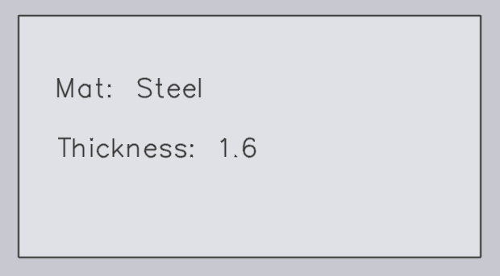

Import

Nastavení výstupu
Uložit plochý vzor - Povolte tuto možnost pro uložení plochého vzoru importované součásti.
Formát pro plochý vzor - Tato možnost se používá pro výběr buď DXF nebo GEO souborových formátů.
Cílové místo pro plochý vzor - Toto je umístění, kde bude plochý vzor uložen.
Nastavení importu
Jednotky pro soubory DXF - Toto je měrná jednotka, se kterou bude DXF soubor importován, uživatel může volit mezi mm nebo palci.
Vyhledat materiál - testovací pole - Více vyhledávacích záznamů lze přiřadit pomocí oddělovače čárkou mezi nimi. Když je součást importována, TruSmartCAM používá tyto klíče pro vyhledávání hodnot materiálu. Nalezené hodnoty jsou poté použity pro určení surového materiálu. Původní hodnoty jsou uloženy v různých vlastnostech součásti.
Vyhledat revize - testovací pole - Když je součást importována, hodnota revize z původního souboru součásti (soubor součásti, který je importován) je porovnána s existující hodnotou revize v repozitáři. Import je zrušen, pokud je revize stejná. Vlastní mapování polí je nyní také podporováno pro DXF soubory. Pro DXF soubory jsou data vlastních polí extrahována z textové vrstvy v kresbě nebo přílohy PPI.
Použít porovnání geometrie u stejné revize CAD - Porovnává geometrii při importu součásti se stejnou CAD revizí a vyzve uživatele k nahrazení nebo přeskočení importu, pokud jsou detekovány rozdíly, viz Konfigurace importu pro více podrobností.
Název dílu - testovací pole - Tato možnost funguje podobně jako materiál a Vyhledat revize - testovací pole. Nastavte jeden nebo více Název dílu - testovací pole pro použití PPI Název dílu místo názvu souboru jako názvu součásti.
Vyhledat tloušťku - testovací pole - Více vyhledávacích záznamů lze přiřadit pomocí oddělovače čárkou mezi nimi. Když je součást importována, TruSmartCAM používá tyto klíče pro vyhledávání hodnot tloušťky. Nalezené hodnoty jsou poté použity pro určení tloušťky. Původní hodnoty jsou uloženy v různých vlastnostech součásti.
Porovnání tloušťky - Toto se používá při vyhledávání surového materiálu, když je součást importována. TruSmartCAM se pokouší určit surový materiál po naparsování názvu materiálu a tloušťky. Pro více informací se odvolejte na téma Thickness fudge níže.
Rozpoznat tvary po importu plochy - Když je součást importována, vnitřní tvary v rámci součásti mohou být automaticky rozpoznány a identifikovány.
Rozpoznání tvaru - Hodnotu fudge pro identifikaci tvaru lze nastavit na:
-
Globální úroveň - Tato hodnota je použita jako výchozí pro všechny tvary.
-
Úroveň jednotlivého tvaru - Výchozí hodnotu lze přepsat nastavením hodnoty fudge na úrovni jednotlivého tvaru. Výběr tvaru v dialogu Knihovna tvarů zobrazí hodnotu fudge. Ve výchozím nastavení je toto nastaveno na 0 a výchozí globální hodnota je použita pro takové tvary.
Otočit plochu horizontálně - Obecně jsou stoly řezacích strojů obdélníkové a širší. Pro zvýšení proveditelnosti nástrojování otočte součást podél šířky součásti po importu součásti.
Prahová hodnota rotace dílu - Nastavte toto jako minimální číslo pro povolení otáčení. Jakákoli součást menší než nastavená hodnota nebude otočena.
Různá nastavení
Umožnit před-import externích nástrojů - Povolte možnost importu předimportních externích nástrojů pro povolení Creo Reader. TruSmartCAM nahraje předextrahované instance rodiny vhozené součásti. Vezměte prosím na vědomí, že extrakce instance je provedena během nahrání součásti (jako předimportní operace), takže software Creo musí být nainstalován na počítači, ze kterého je součást nahrávána.
Ignorovat barvy kreslení v náhledech ploch pro přehlednost - Povolte tuto možnost pro generování ostřejších náhledů ve stupních šedi. Barvy vrstev a textové entity jsou ignorovány kvůli čitelnosti obrazu.
Použít pouze jeden motor pro všechny importy úlohy - Když je povoleno, pouze jedno jádro enginu je použito pro důležité úkoly.
Thickness fudge
Porovnání tloušťky vybírá nejbližší hodnotu tloušťky plechu, když požadovaná tloušťka plechu není dostupná v inventáři porovnáním hodnoty tloušťky plechů v inventáři.
Například, předpokládejme následující:
-
Máme součást s tloušťkou plechu 1.6 mm a materiálem ocel.

-
Hodnota Porovnání tloušťky je 0.1 mm.

-
Inventář má ocelové plechy s tloušťkou 1.5 mm, 1.55 mm a 1.7 mm.

TruSmartCAM vybírá plech s nejbližší hodnotou tloušťky po porovnání hodnoty Porovnání tloušťky (0.1 mm) s importovanou položkou (měřící 1.6 mm). V tomto případě bude vybrána hodnota 1.55 mm.